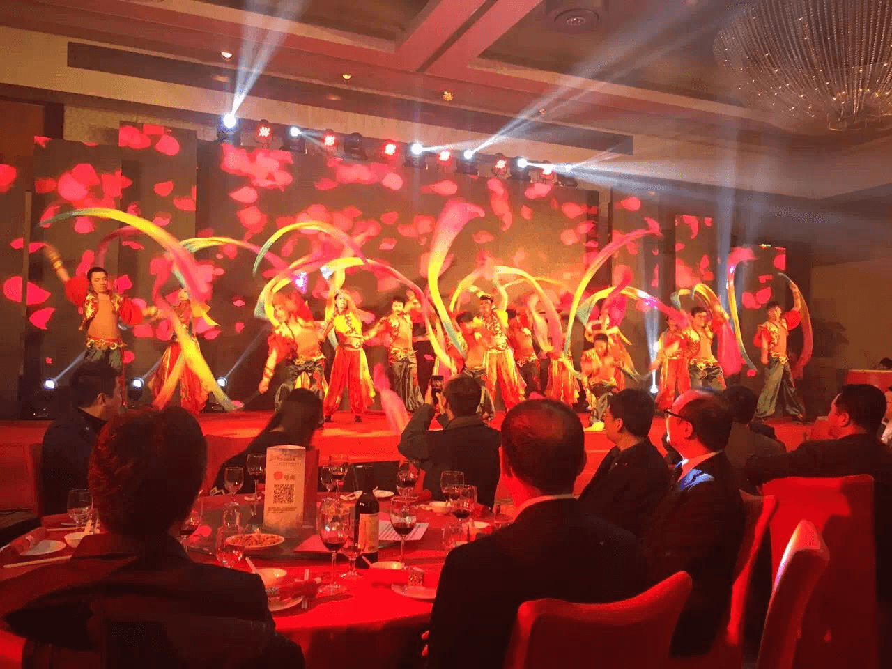
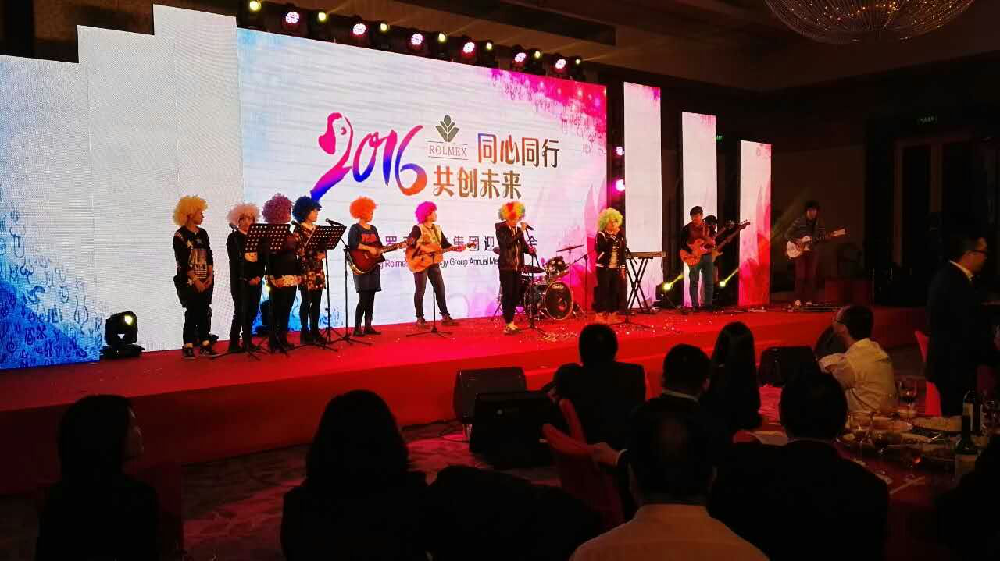
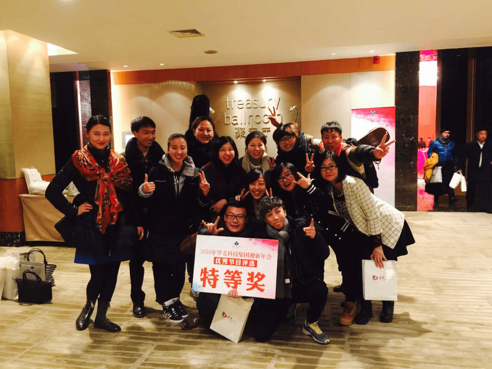

万物更新，辞旧迎新，2015年是罗麦至关重要的一年，我们踏上第三个五年的发展之路，在汪静董事长的带领下，罗麦人不断开拓创新，乘势而上，协同作战，完成了多项喜人成果。2016的新春即将来临之际，罗麦科技集团在北京金融街威斯汀大酒店举办了迎新年会，珍藏过去一年的努力探索、扎实创业，将取得的成绩安放在心，迎面而来的2016，我们已经收拾好行装做好了远航的准备，同心同行，共创未来！
1月29日下午5点整，“同心同行 共创未来——2016罗麦科技集团迎新年会”于北京金融街威斯汀大酒店正式拉开帷幕，出席年会的有北京罗麦科技集团董事长汪静女士北京罗麦科技集团副董事长、北京罗麦科技有限公司总裁、北京易麦通电子商务有限公司董事长汪炜楠先生、北京罗麦科技集团副总裁、北京罗麦科技有限公司常务副总裁安凯、北京罗麦科技集团副总裁臧权武、启明公益基金会理事长陶国林、北京罗麦科技集团董事长助理谷峰、北京罗麦科技有限公司副总裁孙建军、北京罗麦科技有限公司副总裁白云、北京易麦通电子商务有限公司高级副总裁陈功、北京天铉通电子商务有限公司总经理邹翔宇、北京二十一世纪威克传媒股份有限公司总裁肖凯、北京二十一世纪威克传媒股份有限公司副总经理兼董事会秘书阮欣、北京罗麦科技有限公司副总裁付洪宇、北京罗麦科技有限公司副总裁郑力宏、北京东威创星科技有限公司总经理罗鸿欣、北京罗麦科技集团人事行政总监王广元、北京罗麦科技有限公司市场部总监王智鑫，以及罗麦集团全体员工和重庆品质全球分公司的同事们。
一首欢快的《锦绣罗麦》为盛宴拉开了序幕，易麦通电子商务有限公司精心排练的集体舞蹈，带着一股年轻的生气和喜悦的期盼，越入了我们的视线。锣鼓敲响，红袖飘动，长歌善舞，歌颂丰功。一曲激动人心的鼓乐，向罗麦家人献上了过去一年的谢意，送上了新一年的期盼之声。

罗麦集团和各个分公司、部门、事业部分别表演了精彩纷呈的节目，主持人风趣的调侃，和演员们的互动，抢红包等全体互动的环节，都让整台年会充满其乐融融的气氛。

北京罗麦科技有限公司总裁汪静发表了慷慨激昂的演讲，给罗麦全体员工注入了强力的动力和新的目标希望。她说：“你们都是我的孩子们，罗麦需要你们，我需要你们！新的一年里，让我们再携手一起共创未来！”北京易麦通电子商务有限公司董事长汪炜楠对汪静董事长的一席话也让我们深感温暖：“我们都是你的孩子，孩子们希望您身体健健康康的，再一起去做事业。” 感谢我们的大家长汪静董事长，感谢您为我们提供实现梦想、展示自我的良好平台。母子情深，这大概就是罗麦的领导和罗麦家人之间最深的牵绊。
年会进行到最后，优秀歌舞相声小品节目纷纷被全场员工评选出来，并进行了颁奖仪式，同时感谢今晚所有演出的同事，感谢你们用心为大家带来欢笑与感动。最终深受好评的易麦通电子商务有限公司O2O事业部及品质365事业部的同事等带来的音乐舞台剧《小智特烦恼》获得了特等奖。

我们难忘团聚的感动与真诚的祝福，我们难忘辞旧迎新的欢唱，2016年我们整装待发！罗麦家人，让我们同心同行，共创美好未来！
2016年1月30日